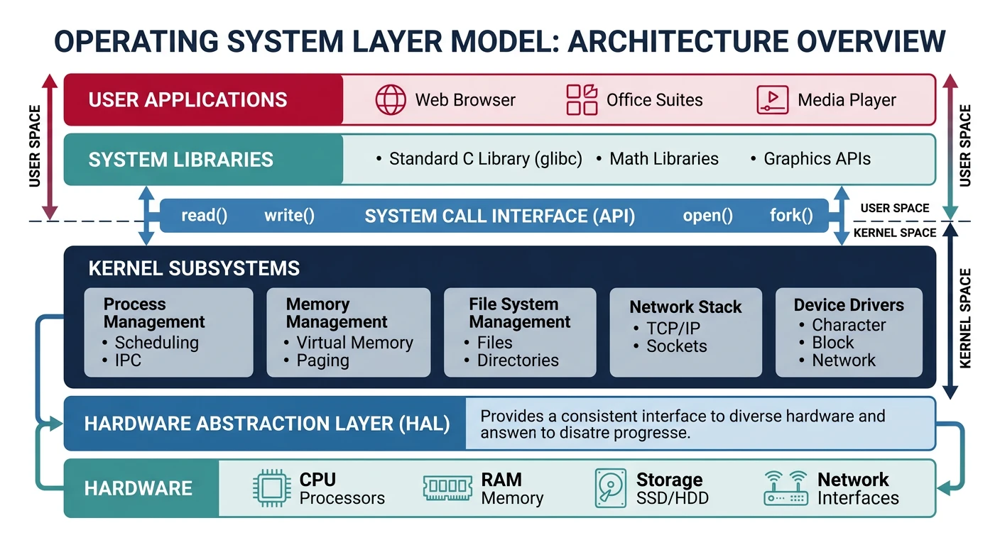
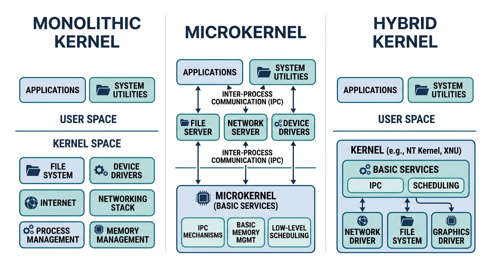
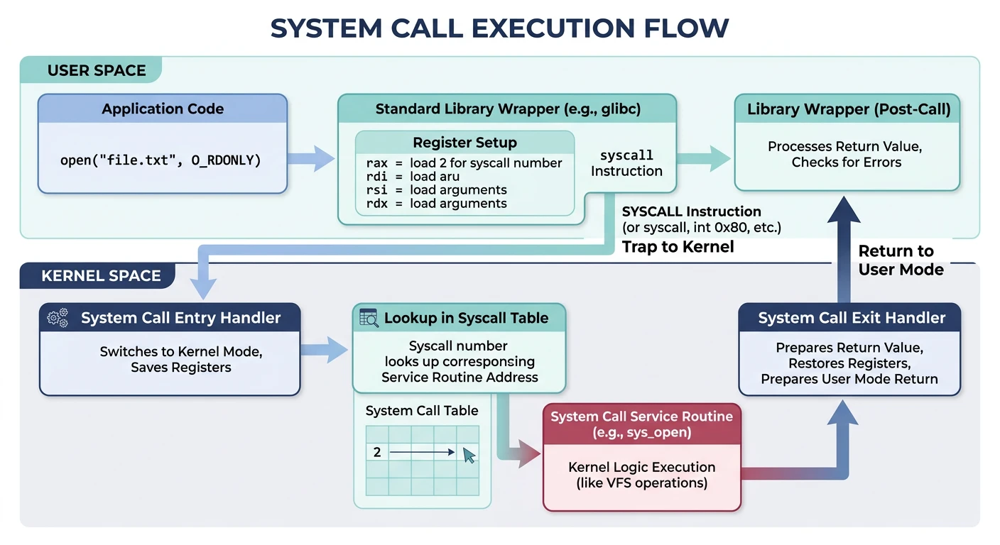
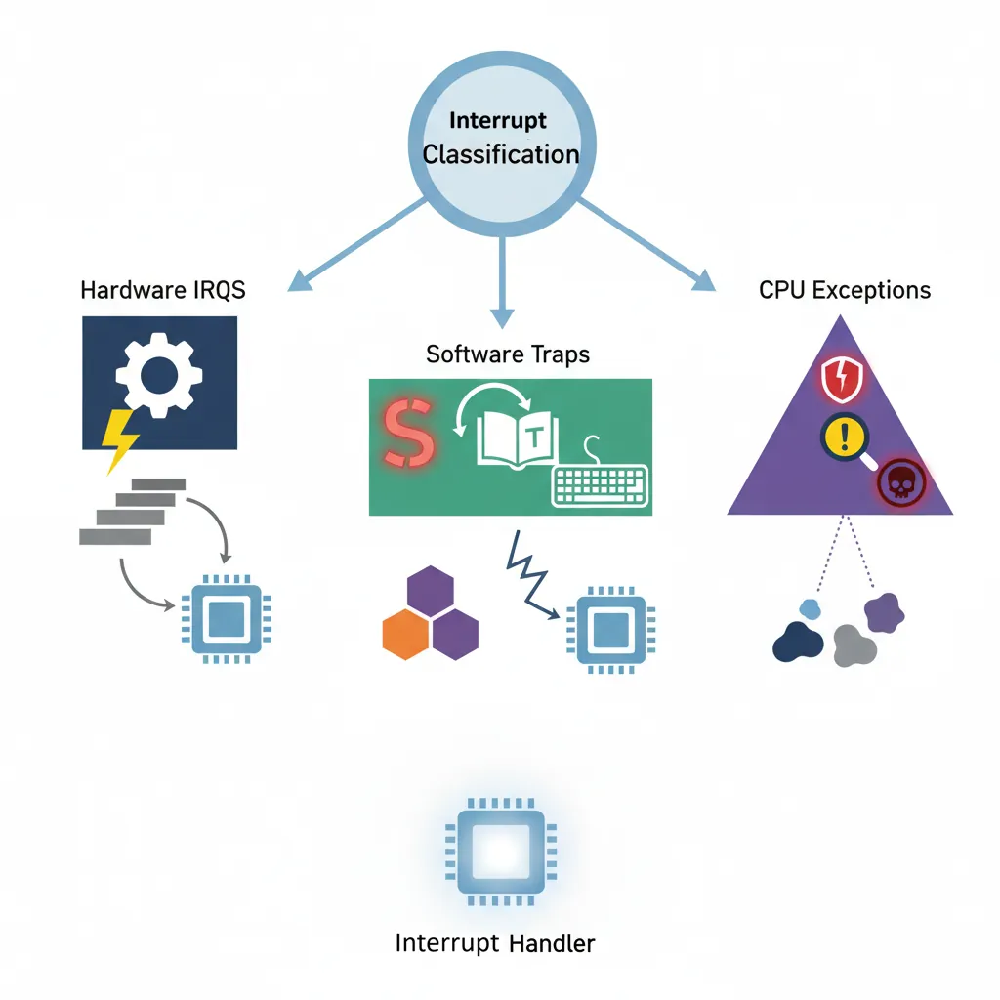

The operating system kernel is the core of any OS—it manages hardware resources, provides services to applications, and enforces security boundaries. Understanding kernel architecture is essential for systems programming and performance optimization.

Operating system layer model: applications interact with hardware only through the kernel’s system call interface, which provides process, memory, file, and device management
Series Context: This is Part 8 of 24 in the Computer Architecture & Operating Systems Mastery series. Having covered CPU execution and pipelining, we now transition to operating system fundamentals.
The kernel is the core component of an operating system—the software that runs at the highest privilege level and has direct access to hardware. It's the bridge between applications and hardware.
OS Layer Model
Operating System Architecture:
══════════════════════════════════════════════════════════════
┌─────────────────────────────────────────────────────────────┐
│ User Applications │
│ (Browser, Editor, Games, etc.) │
├─────────────────────────────────────────────────────────────┤
│ System Libraries │
│ (libc, libm, libpthread) │
├─────────────────────────────────────────────────────────────┤
│ System Call Interface │ ← User/Kernel boundary
╠═════════════════════════════════════════════════════════════╣
│ KERNEL │
│ ┌─────────────┬─────────────┬─────────────┬──────────────┐ │
│ │ Process │ Memory │ File │ Device │ │
│ │ Management │ Management │ Systems │ Drivers │ │
│ └─────────────┴─────────────┴─────────────┴──────────────┘ │
│ ┌─────────────────────────────────────────────────────────┐ │
│ │ Hardware Abstraction Layer (HAL) │ │
│ └─────────────────────────────────────────────────────────┘ │
├─────────────────────────────────────────────────────────────┤
│ HARDWARE │
│ (CPU, Memory, Disks, Network) │
└─────────────────────────────────────────────────────────────┘
The kernel's responsibilities:
1. Process management: Create, schedule, terminate processes
2. Memory management: Virtual memory, allocation, protection
3. File systems: Organize data on storage devices
4. Device drivers: Communicate with hardware
5. Security: Enforce access controls and isolation
Kernel vs OS: The kernel is just one part of an OS. A complete OS also includes system utilities (ls, ps), libraries (libc), shells (bash), and services (systemd). Linux is technically just the kernel—GNU/Linux includes the complete OS.
Kernel Types
Operating systems use different kernel architectures, each with distinct trade-offs between performance, security, and complexity.

Kernel architecture comparison: monolithic runs everything in Ring 0, microkernels move services to user space, and hybrids combine both approaches
Monolithic Kernels
In a monolithic kernel, all OS services run in a single address space in kernel mode. The entire kernel is one large program.
Monolithic Kernel Architecture
Monolithic Kernel (Linux, FreeBSD, early Unix):
══════════════════════════════════════════════════════════════
User Space (Ring 3)
┌─────────────────────────────────────────────────────────────┐
│ Application A Application B Application C │
└─────────────────────────────────────────────────────────────┘
│ System Call │
════════════════════╪═════════════╪════════════════════════════
Kernel Space (Ring 0) ↓
┌─────────────────────────────────────────────────────────────┐
│ ┌───────────┬───────────┬───────────┬───────────┬────────┐ │
│ │ Scheduler │ Memory │ VFS │ Network │ IPC │ │
│ │ │ Manager │ │ Stack │ │ │
│ └───────────┴───────────┴───────────┴───────────┴────────┘ │
│ ┌───────────┬───────────┬───────────┬───────────┐ │
│ │ ext4 │ btrfs │ NFS │ procfs │ File │
│ │ driver │ driver │ driver │ driver │ Systems │
│ └───────────┴───────────┴───────────┴───────────┘ │
│ ┌───────────┬───────────┬───────────┬───────────┐ │
│ │ Disk │ Network │ USB │ GPU │ Device │
│ │ Driver │ Driver │ Driver │ Driver │ Drivers │
│ └───────────┴───────────┴───────────┴───────────┘ │
│ All run in Ring 0! │
└─────────────────────────────────────────────────────────────┘
Advantages:
✓ Fast - no context switches between kernel components
✓ Efficient - direct function calls, shared memory
✓ Proven - Linux, Unix have decades of refinement
Disadvantages:
✗ Large attack surface - bug anywhere can crash/compromise system
✗ No isolation - driver bug can corrupt entire kernel
✗ Hard to extend - changes require recompilation
Microkernels
A microkernel provides only minimal services (IPC, scheduling, memory primitives). Everything else runs in user space as servers.
Microkernel Architecture
Microkernel (Minix, QNX, seL4, L4):
══════════════════════════════════════════════════════════════
User Space (Ring 3)
┌─────────────────────────────────────────────────────────────┐
│ Application A Application B Application C │
│ │ │ │ │
│ └────────────────┼──────────────────┘ │
│ ↓ │
│ ┌────────────┬────────────┬────────────┬────────────┐ │
│ │ File System│ Network │ Device │ Memory │ │
│ │ Server │ Server │ Server │ Server │ │
│ │ (user) │ (user) │ (user) │ (user) │ │
│ └────────────┴────────────┴────────────┴────────────┘ │
│ │ │ │ │ │
│ └────────────┴────────────┴────────────┘ │
│ ↓ IPC │
└──────────────────────────┼──────────────────────────────────┘
═══════════════════════════╪══════════════════════════════════
Kernel Space (Ring 0) ↓
┌─────────────────────────────────────────────────────────────┐
│ ┌───────────────────────────────────────────────────────┐ │
│ │ MICROKERNEL (~10K lines of code) │ │
│ │ • Basic scheduling • IPC (message passing) │ │
│ │ • Address space mgmt • Basic memory primitives │ │
│ └───────────────────────────────────────────────────────┘ │
└─────────────────────────────────────────────────────────────┘
Advantages:
✓ Small trusted computing base - fewer bugs in Ring 0
✓ Isolation - driver crash doesn't crash kernel
✓ Security - minimal attack surface
✓ Flexibility - easy to swap/upgrade servers
Disadvantages:
✗ IPC overhead - user↔kernel↔user for every service
✗ Performance - historically 2-10x slower than monolithic
✗ Complexity - distributed system debugging is hard
Hybrid Kernels
Hybrid kernels combine aspects of both: a monolithic core with some services in user space. This is a practical compromise.
Applications can't directly access hardware—they must request services from the kernel through system calls (syscalls). This is the controlled gateway between user space and kernel space.

System call flow: the application loads arguments into registers, executes the syscall instruction to trap into the kernel, which dispatches to the appropriate handler and returns the result
System Call Mechanism
System Call Flow
System Call Execution (x86-64 Linux):
══════════════════════════════════════════════════════════════
Application calls write():
┌─────────────────────────────────────────────────────────────┐
│ User Space │
│ │
│ printf("Hello") │
│ │ │
│ ↓ │
│ libc: write(1, "Hello", 5) ← Library wrapper │
│ │ │
│ ↓ Prepare syscall │
│ mov rax, 1 # syscall number (1 = write) │
│ mov rdi, 1 # fd = stdout │
│ mov rsi, buf # buffer address │
│ mov rdx, 5 # count │
│ syscall # Trap to kernel! │
│ │ │
└───────┼──────────────────────────────────────────────────────┘
│ Hardware trap (interrupt)
│ • Save user registers to kernel stack
│ • Switch to kernel stack
│ • Change privilege level (Ring 3 → Ring 0)
↓
┌───────┴──────────────────────────────────────────────────────┐
│ Kernel Space │
│ │
│ syscall_entry: │
│ │ │
│ ↓ │
│ syscall_table[rax]() ← Look up handler by syscall # │
│ │ │
│ ↓ │
│ sys_write(fd=1, buf="Hello", count=5) │
│ │ │
│ ↓ Validate parameters, perform operation │
│ • Check fd is valid file descriptor │
│ • Check buffer is in user's address space │
│ • Write data to stdout │
│ │ │
│ ↓ │
│ Return value → rax (bytes written, or -errno) │
│ │ │
│ sysret / iret ← Return to user mode │
│ │ │
└───────┼──────────────────────────────────────────────────────┘
↓
┌───────┴──────────────────────────────────────────────────────┐
│ User Space │
│ • Restore user registers │
│ • Resume at instruction after syscall │
│ • Check return value (rax) │
└─────────────────────────────────────────────────────────────┘
System Call Mechanism
sequenceDiagram
participant UP as User Program Ring 3
participant LIB as libc Wrapper
participant CPU as CPU
participant K as Kernel Ring 0
UP->>LIB: write(fd, buf, count)
LIB->>CPU: SYSCALL / INT 0x80
Note over CPU: Mode Switch Ring 3 to Ring 0
CPU->>K: Dispatch via Syscall Table
K->>K: Execute sys_write()
K->>CPU: Return Value in RAX
Note over CPU: Mode Switch Ring 0 to Ring 3
CPU->>LIB: Return from Interrupt
LIB->>UP: Return Result
Categories of System Calls
System Call Categories:
══════════════════════════════════════════════════════════════
1. PROCESS CONTROL
├── fork() Create new process (copy parent)
├── exec() Replace process image with new program
├── wait() Wait for child process to terminate
├── exit() Terminate current process
└── kill() Send signal to process
2. FILE OPERATIONS
├── open() Open file, return file descriptor
├── close() Close file descriptor
├── read() Read bytes from file descriptor
├── write() Write bytes to file descriptor
├── lseek() Move read/write position
└── stat() Get file metadata
3. DEVICE MANAGEMENT
├── ioctl() Device-specific control operations
├── mmap() Map file/device to memory
└── poll() Wait for events on file descriptors
4. INFORMATION MAINTENANCE
├── getpid() Get process ID
├── getuid() Get user ID
├── time() Get current time
└── uname() Get system information
5. COMMUNICATION
├── pipe() Create pipe for IPC
├── socket() Create network socket
├── connect() Connect to remote socket
└── sendmsg() Send message on socket
6. MEMORY MANAGEMENT
├── brk() Change data segment size
├── mmap() Map memory (anonymous or file-backed)
└── mprotect() Set memory protection
Implementation Details
Tracing System Calls
# Linux: strace shows all system calls made by a program
$ strace -c ls /tmp
% time seconds usecs/call calls errors syscall
------ ----------- ----------- --------- --------- ----------------
29.41 0.000050 50 1 execve
17.65 0.000030 3 10 mmap
11.76 0.000020 3 7 close
11.76 0.000020 2 8 fstat
5.88 0.000010 2 5 openat
5.88 0.000010 2 5 read
...
------ ----------- ----------- --------- --------- ----------------
100.00 0.000170 2 72 4 total
# Show individual syscalls with arguments
$ strace ls /tmp 2>&1 | head -20
execve("/bin/ls", ["ls", "/tmp"], 0x7ffd... /* 50 vars */) = 0
brk(NULL) = 0x55a8c8b52000
mmap(NULL, 8192, PROT_READ|PROT_WRITE, MAP_PRIVATE|MAP_ANONYMOUS, -1, 0) = 0x7f8
openat(AT_FDCWD, "/tmp", O_RDONLY|O_NONBLOCK|O_DIRECTORY|O_CLOEXEC) = 3
getdents64(3, /* 15 entries */, 32768) = 456
write(1, "file1.txt file2.txt\n", 21) = 21
close(3) = 0
Syscall Cost: Each system call costs ~100-1000 CPU cycles due to mode switch, cache effects, and register saving. That's why buffered I/O (fwrite vs write) is faster—it batches many small writes into fewer syscalls.
Interrupt Handling
Interrupts are signals that demand the CPU's immediate attention. They're how hardware devices communicate with the processor and how the OS implements multitasking.

Interrupt classification: hardware IRQs from external devices, software traps from syscall/breakpoint instructions, and CPU exceptions (faults, traps, aborts)
Security Foundation: Privilege separation is the foundation of OS security. Without it, any program could read your passwords, install rootkits, or crash the system. Hardware enforcement means even a buggy/malicious program can't bypass these restrictions.
Conclusion & Next Steps
We've explored the fundamental architecture of operating system kernels—the software that bridges applications and hardware. Key takeaways:
Kernel Types: Monolithic (Linux) for performance, microkernels (seL4) for security, hybrids (Windows) for balance
System Calls: The controlled gateway between user space and kernel space (~200-1000 cycles each)
Interrupts: Hardware signals, software traps, and exceptions that demand CPU attention
Privilege Levels: Hardware-enforced isolation (Ring 0/Ring 3) that protects the system
Key Insight: The kernel is trusted code that runs with full hardware access. This design (user/kernel separation) is why you can run untrusted programs without them crashing your system or stealing your data.
Continue the Computer Architecture & OS Series
Part 7: CPU Execution & Pipelining
Fetch-decode-execute cycle, pipeline hazards, and branch prediction.